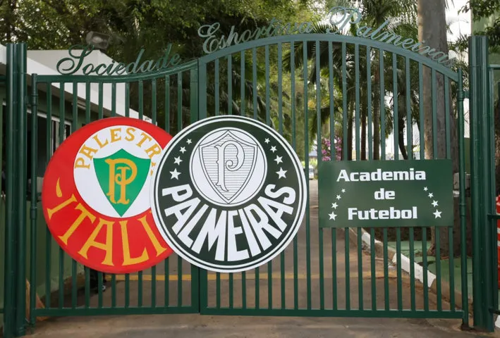
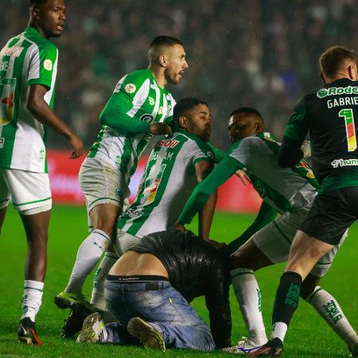

Em um dia comum na escola, um grupo de amigos se reuniu para discutir sobre futebol, até que um dos meninos(que era palmeirense) resolveu zuar com os outros colegas alegando que seu time tinha todos os títulos. Porém todos os outros amigos começaram a rir do comentário que ele havia feito.
Você começa sua jornada para investigar se o mito do "Mundial do Palmeiras" é verídico
Na sua casa você fica chateado porque agora os seus amigos te zoam todo dia
Você chega no CT do palmeiras e fica perdido
Você chega no aeroporto e pensa em qual lugar ir pra checar o mito
Você sai de casa e encontra um grupo de jovens, que te zoam logo em seguida.Você entra correndo e não quer mais sair de casa
Você levanta da cama motivado a descobrir a verdade
Você é expulso e sai triste
Você consegue no máximo uma foto e um autógrafo
Você chega na FIFA e encontra o presidente, então faz a sua grande pergunta a ele enquanto ele da risada da sua cara
Você chega na casa do último jogador vivo daquela época, e então é expulso do condomínio